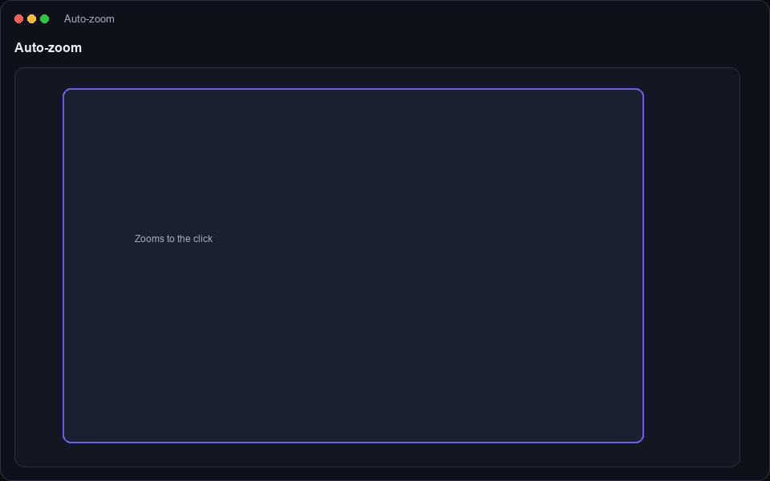
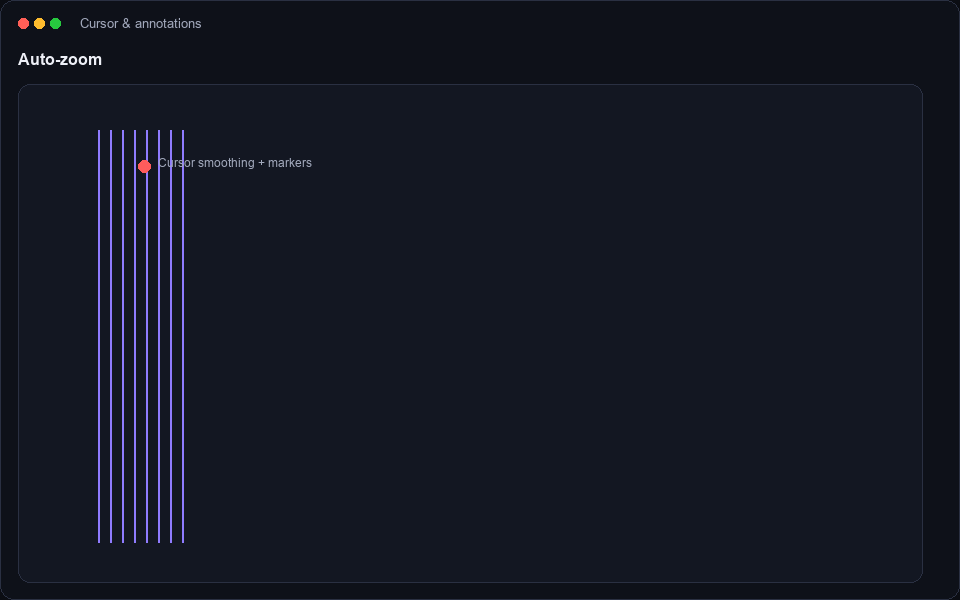
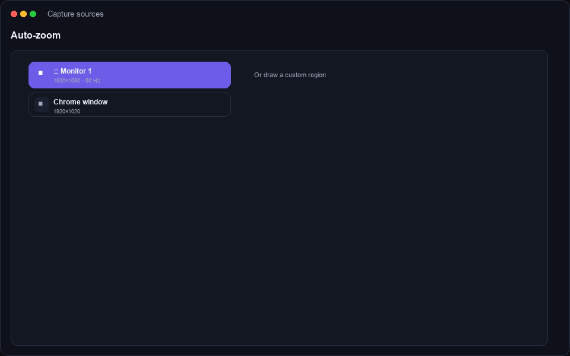
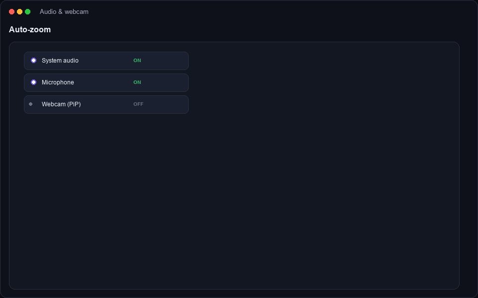
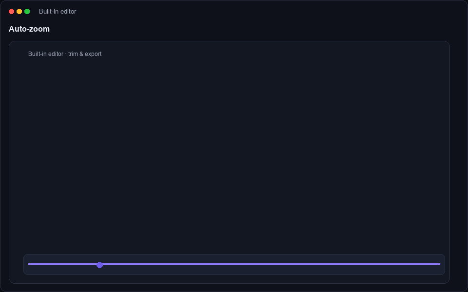
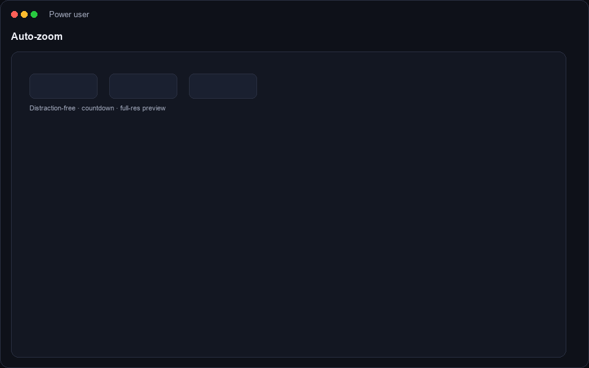

Every capability is designed around one idea: the recording you stop with is the recording you ship.

Whether it's a tiny dropdown, a code editor line, or a settings panel, DeskRec recognises the action and frames it beautifully.

Your cursor gets a gentle, natural feel, and you can annotate directly over the recording as you narrate.

DeskRec adapts to whatever you're recording, from a full multi-monitor setup to a focused window.

Layer the sound and presence you need for a personal, human recording.

No need for a separate video app. Review your clip, trim the extras and export straight away.

Small touches that make a daily tool feel great to live in.
Download DeskRec free for 7 days and feel how automatic zoom changes your recordings.